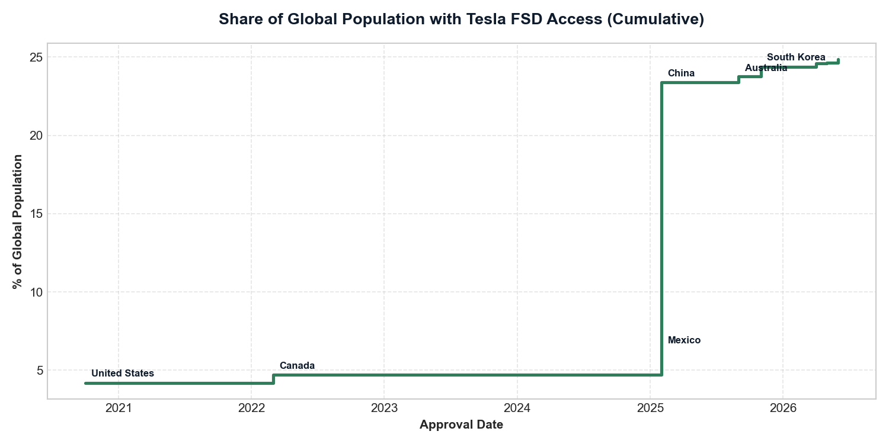
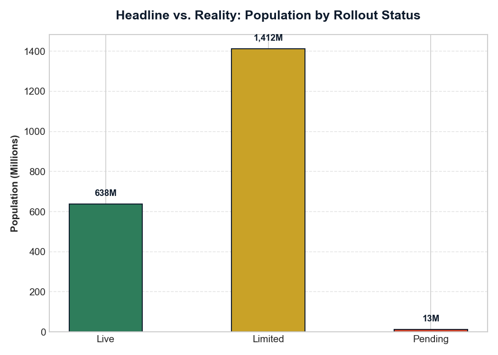
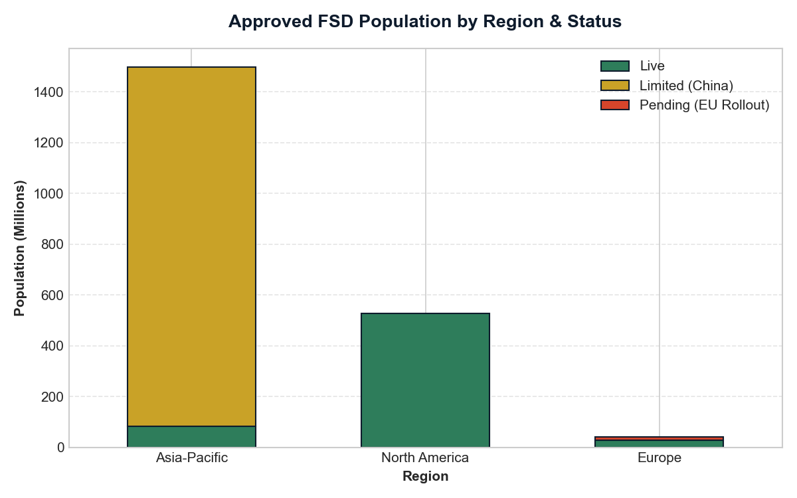
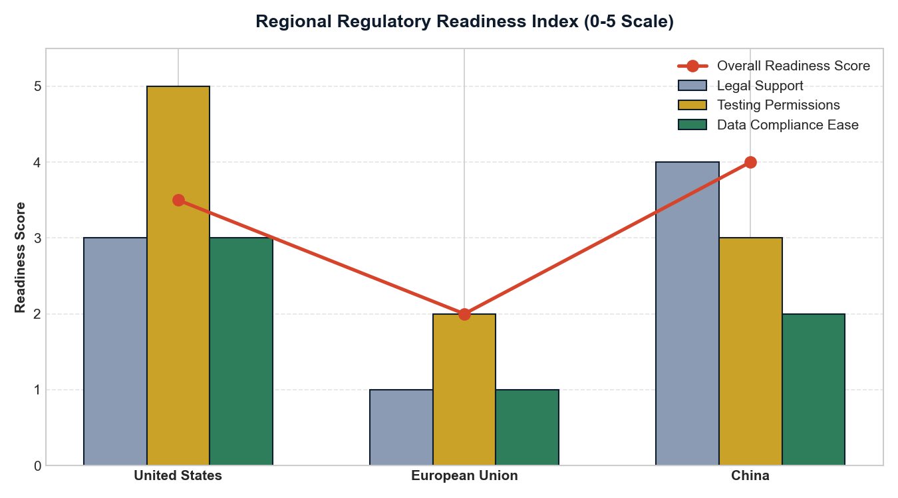
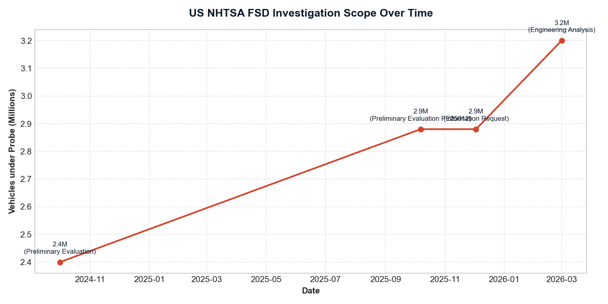
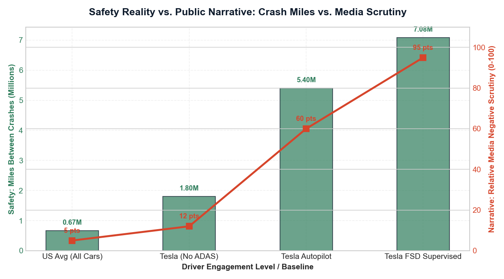
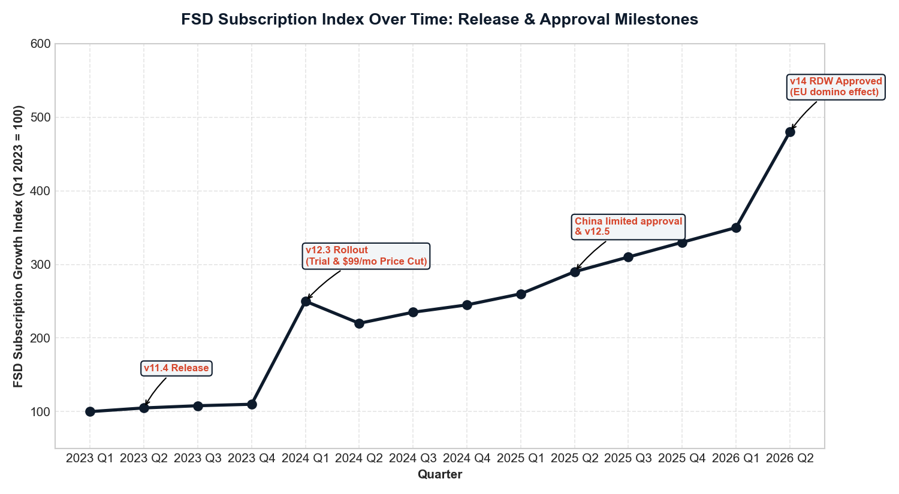
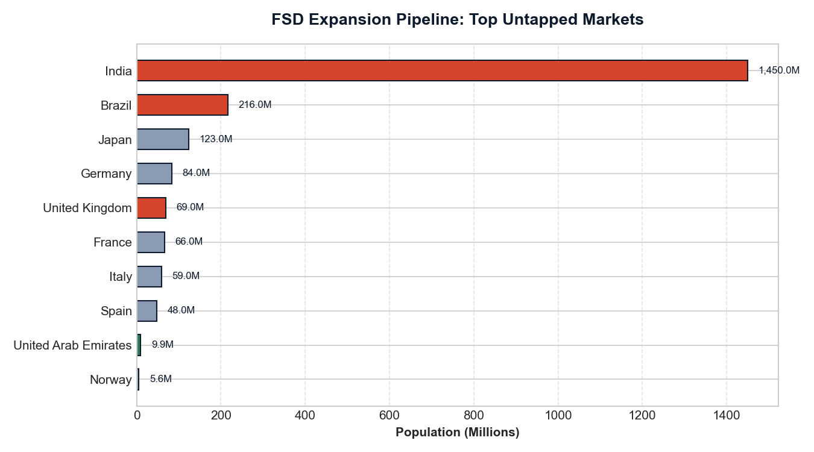

I audited Tesla Full Self-Driving's global rollout the way a regulator would: country approvals, rollout status, NHTSA investigation records, and the expansion pipeline — then quantified the gap between the headline and usable access.
The Dutch RDW's April 2026 approval became a template other European regulators reuse — five EU countries approved FSD in roughly 60 days. Regulatory velocity, not software capability, is now the growth variable.
Splitting approved population by rollout status (live / limited / pending) cuts usable access to ~31% of the headline. China's data-compliance rules alone freeze two-thirds of the claimed reach.
NHTSA escalated from a 2.4M-vehicle evaluation (2024) to a 3.2M-vehicle Engineering Analysis (2026) over camera-visibility failures and traffic-law violations — while Tesla could manually process only ~300 records a day of the regulator's data request.
India (1.45B) and Brazil (216M) have no announced framework for supervised L2+ systems. The constraint there isn't approval — it's that there is nothing to approve against.
To understand FSD adoption beyond raw numbers, I analyzed both regional differences and velocity metrics—two critical dimensions that Tesla strategy teams use internally to evaluate autonomy readiness.
Measuring how adoption, regulatory gates, and safety baselines differ across geographic boundaries.
Measuring the speed of systemic change—how fast the software improves and how rapidly rules adapt.

Each country's approval adds to the cumulative population share. Note the 2026 European wave: five countries in ~60 days, showing that regulatory approvals behave like a network domino effect once a reference decision (Dutch RDW) is established.

Live (green): Active rollout (639M people) · Limited (gold): China's restricted access (1.41B people) · Pending (red): Approved but not yet rolled out (13M people). The 25% headline overstates usable access by ~3x because two-thirds of the approved population is locked in China's data-compliance stall.

A regional breakdown shows how FSD availability is shaped by local laws. North America is almost fully live, Asia-Pacific is dominated by China's limited status, and Europe has approvals but remains mostly pending rollout.

Quantifying readiness across regions on a 0-5 scale. China leads in policy support (4.0/5), the US leads in testing permissions (3.5/5), while the European Union remains the most restrictive (2.0/5) due to strict L2+ testing caps and GDPR data residency burdens.

Investigation scope grew 33% from Oct 2024 (2.4M vehicles) to Mar 2026 (3.2M vehicles) — now in the Engineering Analysis phase, the formal step before a recall. Camera-only degradation under glare and debris remains the primary regulatory hazard in the US.

Comparing actual safety data (miles between crashes under FSD vs. US national average) against relative negative media narrative volume. Empirical safety shows FSD is 10.5x safer than the US average, but media scrutiny of FSD crashes remains extremely high (95 pts index). This reveals that the biggest barrier to adoption isn't capability — it's trust.

Tracking the subscription index shows how software releases (such as v12.3 introducing end-to-end neural nets, accompanied by a 1-month free trial and a price cut to $99/mo) and regulatory approvals (such as the EU wave) drive massive adoption velocity.

Combined, the untapped pipeline represents 2.2B people. India (1.45B) and Brazil (216M) represent the largest untapped populations but currently have no announced regulatory framework, highlighting that shaping local standards is the biggest scaling barrier.
| Year | Approvals | Population Added |
|---|---|---|
| 2020 | 1 | 349M |
| 2022 | 1 | 42M |
| 2025 | 6 | 1.63B |
| 2026 (Q1–Q2) | 5 | 40M |
Insight: 2025 saw a massive jump (China + Mexico + Australia + 3 others in one year), but 2026 shows consolidation. Regulatory approval comes in waves, not linearly.
| Country | Population | Status (Q2 2026) | Key Blocker |
|---|---|---|---|
| India | 1.45B | Not announced | No regulatory framework |
| Brazil | 216M | Not announced | No announced framework |
| Japan | 123M | Pipeline 2026 | Localization + approval |
| Germany | 84M | Pipeline | EU type-approval pending |
| United Kingdom | 69M | Expected | Awaiting regulator decision |
| France | 66M | Pipeline | EU type-approval pending |
| Italy | 59M | Pipeline | EU type-approval pending |
| Spain | 48M | Pipeline | EU type-approval pending |
| UAE | 9.9M | Road testing | Localized data collection |
| Norway | 5.6M | Pipeline | High EV penetration; pending |
Opportunity: Combined, the pipeline represents 2.2B people — nearly as large as the currently "approved" population. India alone is 3x the current US FSD user base.
Curated three datasets from primary public reporting (regulatory approval tracker, NHTSA investigation timeline, expansion pipeline), loaded them into SQLite, and wrote 8 SQL analyses — window functions for cumulative access and approval velocity, status splits for the headline-vs-reality gap. A reproducible Python script generates the processed tables and charts; Tableau Public hosts the interactive dashboard.